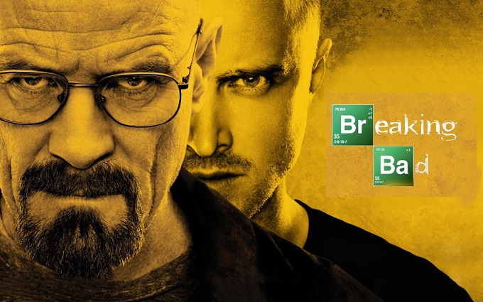
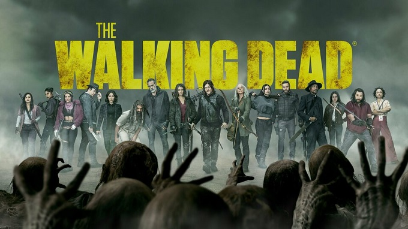
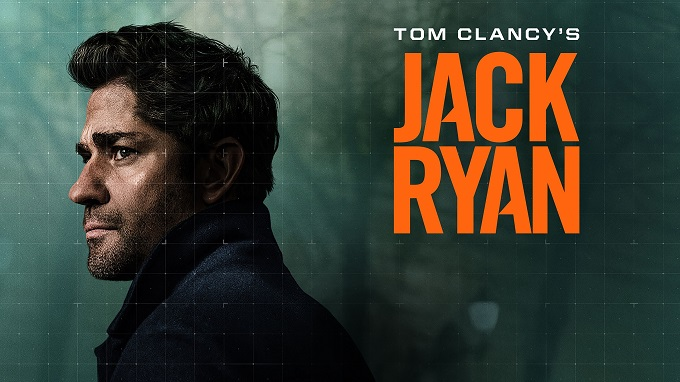
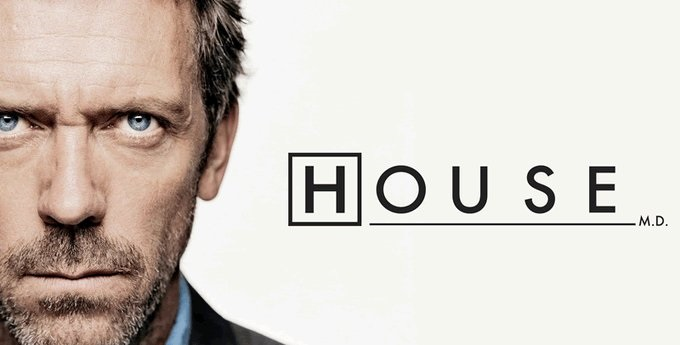

My Top 5 favorite TV shows
Breaking Bad
Description:
Breaking Bad follows Walter White, a struggling, frustrated high school chemistry teacher who transforms into a ruthless kingpin in the local methamphetamine drug trade, driven to provide for his family financially after being diagnosed with inoperable lung cancer.
The Walking Dead
Description:
The Walking Dead takes place after the onset of a worldwide zombie apocalypse. The zombies, referred to as "walkers", shamble towards living humans and other creatures to eat them. They are attracted to noise and to scents, including the scent of humans.
Tom Clancy's Jack Ryan
Description:
CIA analyst Jack Ryan uncovers a series of suspicious transactions that take him and his boss James Greer out from behind their desks into the field to hunt down a powerful new threat to the world; Hanin questions her husband's affairs.
The Boys
Description:
The Boys is set in 2006 through 2008 in a world where superheroes are absolutely everywhere—and not all they're cracked up to be in movies and comic books. These real-life superheroes are corrupted by their celebrity status and as a result, often put people and the planet in danger.
House
Description:
The series' main character is Dr. Gregory House (Hugh Laurie), an unconventional, misanthropic medical genius who, despite his dependence on pain medication, leads a team of diagnosticians at the fictional Princeton–Plainsboro Teaching Hospital (PPTH) in New Jersey. The series' premise originated with Paul Attanasio, while David Shore, who is credited as creator, was primarily responsible for the conception of the title character.